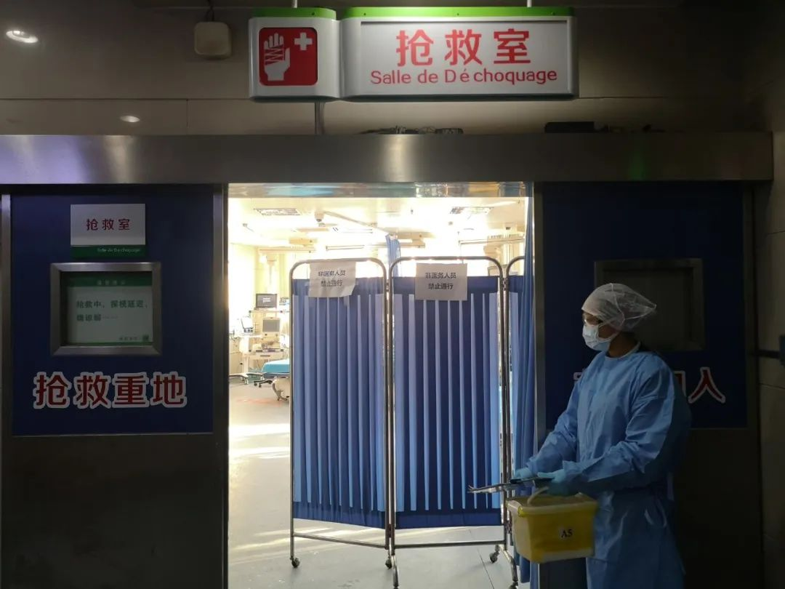
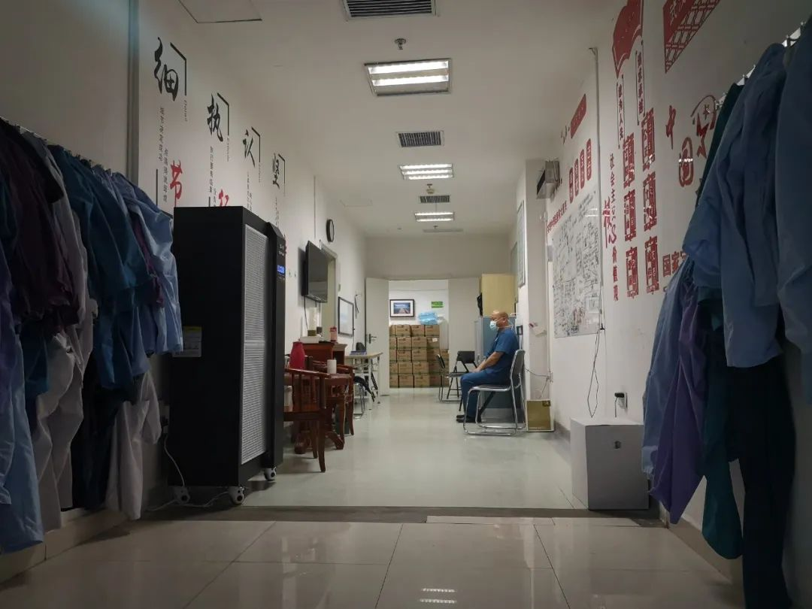
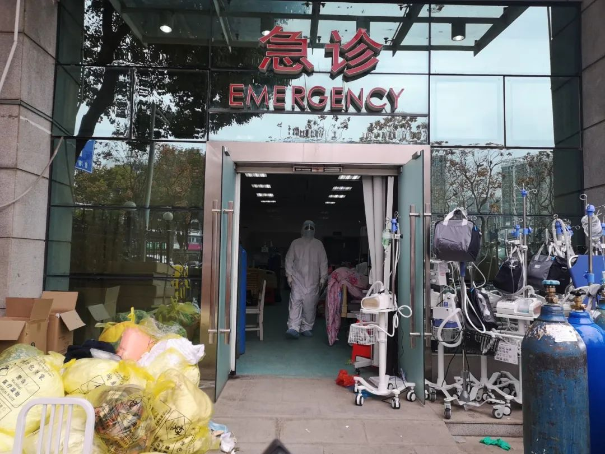

封面报道|四大ICU主任详解病毒 来自最前线的防治之策
原文链接 备份链接 “彭主任，急诊室一个31岁的新冠肺炎病人心脏骤停了，您快来看看，要不要转入ICU。” 2月4日晚上7点半，武汉大学中南医院重症医学科（ICU）主任彭志勇刚从湖北天门考察疫情回到办公室，和财新记者聊了不到十分钟，就 …


新病毒面前，以往治疗经验会被推翻重来，很多当下的经验未经过时间考验，重症病人的治疗争议由此出现。
早期一些病人，起病快，病情很严重，病床不足加上120车辆供不应求，医院之间的周转并不顺畅，真正被送到ICU时，已经拖到“奄奄一息”的地步了。
有一些病人忽然转为危重症，因为前期已经缺氧，却没有明显的症状，让医护人员产生误判。
有创插管存在着极大争议，呼吸科出身的医生们普遍反对，重症科医生则坚持早插管，“50%的重症患者都有希望”。
对一些早期的病人，不同医院的医生给的诊疗方式不同，治疗的割裂性不可避免地造成了后期治疗的难题。

2月24日，封城一个月后，被暴风雪、阴雨、冷气流交替侵袭过的武汉，最低温度已持续多日落在了零度以上。
各大医院凌晨的新冠发热门诊，痛苦的患者和拥挤的人流已几乎不见，1月底疫情爆发最严重时，曾经一夜之间冲进上百人的急诊科，也慢慢冷清。
新确诊人数在下降，病人们按照病情程度分别在隔离点、方舱、定点医院隔离和治疗，门诊、急诊医护的重负逐渐卸下。
依旧让人喘不过气来的，是重症和危重症病房里的死亡气息。
封城之前的1月22日，武汉市新冠肺炎死亡的统计数字是17，32天后，已经达到1987，全国死亡人数达到2596，远远超过SARS时期的总死亡人数。
1个多月来，尽管从全国各地陆续来武汉救援的重症医护者达到1.1万，接近全国重症医务人员资源的10%，却没能阻止死亡数字的攀升。
根据统计数字，武汉患者的病死率依然高达4.26%。
在重症病房里，死亡很常见，医护人员尽最大努力之后，依旧有病人死去，有的医生护士，在某个瞬间，挫败感涌上，只有靠安眠药入眠。
除了重症床位和设备的紧缺，更重要的是，在这个新出现的病毒面前，以往的一些病毒性肺炎治疗经验会被推翻重来，很多当下的经验未经过时间考验，重症病人的治疗争议由此出现。

△ 2020年2月19日，武汉大学中南医院门诊的抢救室外。吴靖摄
资源紧缺情况下被拖成危重症的病人
封城前一天，江苏省苏北人民医院重症医学科主任、国家卫健委治疗专家组成员之一郑瑞强接到电话，武汉市肺科医院急需支援。此时，肺科医院ICU主任胡明，已连轴转了二十多天，筋疲力尽。当晚，郑瑞强便赶到了肺科医院，彼时正好一个病人需要抢救，他二话没说就上了手术台。
治疗专家组的邱海波、童朝辉、杜斌等人，此时也已到达武汉，驻扎在金银潭医院、肺科医院、中南医院、武汉大学人民医院等医院的ICU病房里，和当地重症医学科医生，一起抢救危重症病人。
疫情早期，ICU病房床位很有限，在每个医院一般占总床位的2%-5%之间，很多危重症的病人住不进ICU，只能先暂住新隔离出来的重症病房。病人增加的速度远超新建病房的速度，这批重症病房里的危重症病人，死亡率极高。
从上海赶来支援金银潭的第一批医疗队，一部分医护人员在1月27日接手一个重症病房，里面住着的30多个病人，一开始每天都有2-3人去世。这个病房由外科楼普通病房临时改建，说是重症病房，其实只多了医用氧气机和监护仪。一名护士回忆，“按照我们以往的经验，里面的病人应该全部住到ICU去”，但金银潭医院原有的ICU病房，早就住满。
住进ICU，也不代表能被抢救回来。肺科医院和金银潭医院是最早一批收治危重症患者的定点医院，不设发热门诊，专门接收从其他医院转来的危重症患者和重症患者。早期一些病人，起病快，病情很严重，加上120车辆供不应求，医院之间的周转并不顺畅，真正被送到郑瑞强和胡明手里时，已经拖到“奄奄一息”的地步了。
“这就相当于一个人掉在水里面，他来回扑腾，等他扑腾到完全没力气了，你再去救，已经迟了。”胡明如此形容，这种情况持续了很久，2月17日，他们一口气收了30个转院患者，“但很多患者来的时候已经快休克了”。
疫情开始到现在，很多定点医院都在尽力扩张ICU床位，比如金银潭医院，原本只有南七楼有ICU病房，后来南五楼和南六楼也增加了ICU床位，肺科医院也是，ICU床位从10张增加到了20张。有医生估计，整个武汉，真正意义上的ICU床位，目前在400张左右。
这400张床位，依旧远远不够。危重病人的治疗时间在一个月左右，床位周转很慢。郑瑞强来到这里1个月，他所在的ICU病房，一共有10张床，只转出去四五个，去世的也有四五个，新收的病人只在10人左右，而转出去的病人，平均在ICU里待的时间是4周。

△2020年2月18日，武汉市肺科医院住院部13层医生休息区。吴靖摄
被忽视的指标：
为何一些病人忽然转为危重症
让郑瑞强感到头痛的一个问题是，发病前期，有些重症病人对低氧非常耐受。就是说，正常人吸进的空气氧气浓度是20.9%，而病人由于肺部功能受损，能够吸进肺部的氧气浓度不足20.9%，但这种情况下，病人的表现和正常人没什么不同，医护人员难以判断出异常。
郑瑞强去救治能力较弱的定点医院巡查时，经常发现，一些病人看上去呼吸和正常人差不多，但实际上一查血氧饱和度（在医学上，通常用血氧饱和度作为观察病人呼吸循环的参数，即血液中血氧的浓度），只有80%多，已经比正常人的98%低了很多。
此时，负面影响开始了，“因为缺氧，病人会很使劲吸气，对肺本身又是一个损伤”，前期的假象导致一些医护人员形成了错误的判断，“看上去觉得病人良好，但如果你问，他会有些不舒服的感觉，烦躁等等。”
此前，有媒体报道，说有的护士觉得奇怪，昨天和某个病人讲话还好好的，第二天上班，他就突然去世了。“好像是突然没了，但实际上缺氧和低氧对病人的打击已经存在一段时间了”。
在武汉，初期这些病人除了在吃抗病毒药物外，几乎没有任何呼吸支持。除非病人自己意识到呼吸困难，医护人员才会给高流量鼻导管氧疗。导致这种情况的原因有二：一是人力不足，无法实时检测病人血氧饱和度；二是，人满为患的医院里的氧气供应难以满足这么多病人的需求。
能力较强的定点医院，通常氧气供应比较足，会及时给这些血氧饱和度下降的重症病人高流量鼻导管氧疗或无创机械通气，这些都是属于简单且容易执行的呼吸支持。
新冠病毒对肺部损害明显，呼吸支持相当重要，但不是万能。
“无创吸氧和高流量吸氧当然简单，缺氧了，你就把供氧浓度往上调，调到100%，调无可调”，郑瑞强说，“氧浓度上去了，却没法控制病人自己吸气的努力，肺功能可能还会受到损伤”。
多位专家认为，和其他病毒性肺炎不太一样的地方，这个病能用无创呼吸机和高流量吸氧缓解一部分病人的症状，但对于一些肺功能已经受损的重症患者来说，这种方式很难解决问题。
研究表明，这些危重症的病人除了出现呼吸衰竭，往往还面临心肌严重损伤、肾功能衰竭、循环衰竭等多脏器衰竭。部分危重病人的心肌损害标志物-肌钙蛋白指标甚至可达心梗病人的10倍。
有创插管争议：
呼吸科医生反对，重症科医生支持
虽然第五版指南中写道：当患者接受标准氧疗后呼吸窘迫和（或）低氧血症无法缓解时，可考虑使用高流量鼻导管氧疗或无创通气。若短时间（1-2 小时）内病情无改善甚至恶化，应当及时进行气管插管和有创机械通气。
但有创插管在医生之间存在着极大争议。呼吸科出身的医生们普遍反对，他们担心，插管瞬间，患者咽部喷溅出来的飞沫形成气溶胶，让医务人员面临更大感染风险。四川大学华西医院呼吸与危重症医学科副主任罗凤鸣也担心，插管以后，病人会面临细菌感染等继发风险，因为插管的时候开放气道，屏障功能就丧失了，“我们本来上呼吸道有过滤等功能，插管以后真菌感染的风险更大了”。
更关键的是，“现在有没有证据表明，早期插管效果好？”罗凤鸣表达了自己的困惑。
他带队的华西医疗队支援红十字会医院，对病人进行插管治疗时，插管6个，死了5个。
在罗凤鸣看来，新冠肺炎病人的肺部间质性改变（肺的间质组织发生炎症，大多由于病毒所致，是不可逆转的肺部疾病）比较明显，在他既往的治疗经验中，“很多插管病人治疗效果都不好，我们医院统计过，肺间质病变患者，即使把他转到ICU插管，绝大部分都要死，所以我觉得绝大部分插管要慎重。”
此外，在实际操作中，插管治疗相当于手术，还需家属和本人签字同意等，在这个大规模的救治时期，沟通成本太高。
相反，大部分重症科医生则像郑瑞强一样，坚持早插管，“早插管的话，50%的重症患者都有希望”。郑瑞强认为，用了有创插管之后，医生护士可以给病人做镇静、镇痛，让病人吸气不要那么努力。
武汉大学中南医院影像科主任徐海波经过这1个多月的观察，从肺部CT变化侧证了早插管的重要性：“肺部病变刚开始是比较轻的，密度很低，是淡薄型的，过了三天，肺部马上就会进行实变，根据我的经验，接下来的5-10天是关键期，决定了这个人是死还是活”。
“不要看他现在症状很好，这时候如果没有插管，保护他的肺部休息，血氧交换，这个病人马上就死掉了。”
此外，早期治疗时，郑瑞强已经发现，在给病人做气管镜时，很多病人出现了二氧化碳的潴留，出现呼吸性酸中毒，虽然痰量不多，但往往在远端会有这种胶冻样的粘液痰，而且非常粘稠。也就是说，一些病人如果不及早插管干预，把这些痰吸出来，最后可能会被憋死。

△2020年2月7日，武汉市红十字会医院急诊门口，已经被围起来。吴靖摄
一手经验总结：
危重症病人的插管时机
在武汉市定点医院将所有确诊病人全部收治前（2月5日24时），郑瑞强每天就干两件事：去一些定点医院捞出“真正的重症病人”，转运到肺科医院ICU病房治疗。
这么做的不止他一个人。一共有9支队伍，每支由一个国家卫健委专家组成员和一个武汉本地的专家组成，每天分头去定点医院重症病房中筛查。
轻症病人被分流到方舱医院之后，各地医疗队入驻定点医院，他们开始在巡查的定点医院里，提倡“应插尽插”。
他所到的医院，有的医生畏惧插管。郑瑞强便穿好了防护服，亲自上阵。
2月18日，八点健闻见到郑瑞强和胡明时，他们刚刚从ICU病房里出来，在休息区休息，郑瑞强身后的白板上，写满了密密麻麻的分子式和流程。
这是这9支队伍不断讨论出来的一个有创插管流程。按照指南，无论是高流量吸氧，还是无创通气也好，在给病人使用时，观察两个小时左右，如果氧合没有明显改善，那就应该做插管。
指南上没有提到具体插管和做ECMO的时间节点，他们自己算了分层的治疗策略。
目前，郑瑞强建议看病人的氧合指数。氧合指数是用氧分压除以吸氧浓度，能够反应患者体内的氧合情况，打个比方，空气里氧气浓度是20%，一个正常人的氧分压是80，氧合指数应该是400，但病人现在吸了100%的纯氧氧气浓度，氧分压还是80，那么氧合指数只有80。
如果氧合指数在150以内，就是一个病情非常重的急性呼吸窘迫综合征（ARDS）病人了，在这种情况下，郑瑞强等人就主张早插管。
插管之后也不是什么都不做。郑瑞强建议，还需要帮助病人做俯卧位通气和侧卧位通气，因为这些痰液在肺泡，在背部，身体俯卧，有利于痰液的引流。在药物治疗方面，采取了用一些化痰的药，比如立体粘蛋白药物，使痰液变得稀薄，容易引流。此外，还要加强气管镜的治疗，几乎每天上下午都会做一次气管镜，做痰液的引流，拍背等，使气体能够吹到病人肺泡里面，氧气推进去。
假如插了管，上了呼吸机，也俯卧了，但24小时之后，病人的吸氧浓度还需要达到60%、胜过空气正常浓度的三倍，而氧合指数仍然小于100，“那我们就认为可以上ECMO（人工肺）了，不要再拖再等了”。
在各个医院ICU床位有限的情况下，郑瑞强建议所有的定点医院，除了一个专门的ICU收这种病人以外，每个医疗队在自己负责的病区里面，设2-4张床，相当于一个亚ICU的病房，在那里可以进行插管。“不要全部指望有创通气的病人一定要转到ICU里面去，有的医院收1000个病人，有的医院收800个病人，那ICU一个医院才30张或者20张床，收满了怎么办？”

△2020年2月18日，郑瑞强在武汉市肺科医院住院部13层医生休息区给记者看重症和危重症病人分层治疗图。吴靖摄
糖皮质激素使用争议
即便用上ECMO，郑瑞强手上的几个患者，预后效果也并不是特别好。比如，到2月18日，他和胡明等医生一共做了10例ECMO，只成功撤机2例，而且这2例还没有拔掉插管。撤机成功还要插管拔掉才算真的好转，病人自己恢复自主呼吸功能，才能从ICU 转出去。
而在另一些定点医院，一位医生说，病人上ECMO的效果很不好，“几乎上一个死一个。”
还有何种方法，能够降低危重症病人的死亡率？一些医生尝试了在SRAS期间使用的激素疗法。尽管在这次新冠病人的诊疗规范中，对激素的使用并不倡导，SARS期间，糖皮质激素被过度使用，造成很多患者此后股骨头坏死等后遗症。所以此次在指南中，糖皮质激素的推荐用量相当谨慎。
但一些经验丰富的医生依旧认为，选择合适的时间，适当而不过量使用激素，依旧是可取的治疗方式。
来红十字会医院初期，在没有足够呼吸机以及有效药物的现实压力下，罗凤鸣想到了提高糖皮质激素的用量。
当时，有两个病人病情很危重，一个当时血氧饱和度只有30%多，另一个不到50%，在无创吸氧治疗后，血氧饱和度上升还是缓慢，罗凤鸣直觉，再不采取更积极的措施，病人面临的只有死亡。
于是，他将糖皮质激素的剂量提高到250-500毫克，比SARS时候使用的量小一些，而指南推荐的量在100毫克左右。第二天，这两个病人的血氧饱和度就达到85%以上，此后几天，已经维持在95%以上。其中一个病人已经从ICU转到了普通病房。
罗凤鸣此前在肺部间质性疾病救治中的经验中发现，用大剂量激素冲击，每天500毫克-1克，用了之后淋巴细胞确实很低，病情就改善。比如严重的系统性红斑狼疮，病变很重的时候，就需要这样做。“我当时就在想，这些新冠病人是间质性病变，可以参照间质性相关疾病的救治方案，所以才想到适当增加一些激素的剂量。”
此次疫情中，一些专家达成的共识是：糖皮质激素应该在后期使用，至少要重症在发病1周以后，在肺快要纤维化的时候，来抑制肺的纤维化。
罗凤鸣认为，使用激素的场景，一个是危重症病人，一个是病情进展很快速的病人，还要排除病人感染等因素。使用激素后，医生还要对病人进行密切观察。
但郑瑞强等人去其他医院巡查的时候发现，糖皮质激素被当作一个灵丹妙药，有医院有早期过度使用的现象：患者发烧了，用糖皮质激素，患者气喘了，用糖皮质激素。
早期一些医生过度使用糖皮质激素的后果，会导致患者肺部难以修复，为后期治疗带来极大困难。郑瑞强就曾接手过一个转院来的患者，在重症早期，医生就曾一天给他用240mg的糖皮质激素，使用几天后，效果明显，但过了一周后，病毒载量又飙升，插管和ECMO（体外膜肺氧合技术）治疗后，命保住了，但肺部修复很难，ECMO直到现在还拿不掉。
缺乏总体策略的分段治疗困境
新冠病毒，是一个全新的病毒，至今依旧没有人能够了解到它的全貌；在对新冠肺炎病人的救治中，新的治疗方式尚未被探索，旧的经验却总是被打破。
各种药物的临床试验已经在定点救治医院中铺开：瑞德西韦、小剂量糖皮质激素、氯喹、大剂量维生素C、新冠肺炎康复者的血浆等等，但是否有效，仍需看临床试验的结果。
目前没有特效药，是多数医生的共识，一位在1月初即参与新冠病人治疗的武汉协和东西湖医院的医生说道：“几乎把诊疗指南上提及的所有药都用过，没有什么药是特效的。”
各种未经实验证实效果治疗方式的出现，不断给人希望和打击。有ICU医生曾为危重症患者做ECMO后成功拔机，却不料患者家属仍想用血浆治疗，用了血浆后，肺部又出现炎症。
在特效药尚未面世的现在，被全国各地医疗队包围的武汉，在重症治疗上，如何降低死亡率，仍然是迫切需要解决的问题。
现实情况是，从各地赶来的ICU医护人员现在分散在各个医疗队，接手的危重症病人从不同的定点医院转来，之前经历了各种不同的治疗。一位在SARS战役中有过丰富治疗经验的外地医生，来到武汉的定点医院接管危重症病人时，已到2月中旬，而一些危重症病人的发病期却从12月底开始。“这些病程长的病人，大多属于早期治疗不力、延误了治疗时间。给后续治疗带来了很大的难题。”他说道。
更让他头疼的是，对一些早期的病人，不同医院的医生给的诊疗方式不同，有的医院非常希望病人能快速恢复，认为干预的手段越多越好，反倒对病人造成了过度治疗。“比如一些抗生素，完全没有依据要加；还有免疫球蛋白和激素，会带来后期治疗的一系列问题，让后续接收的医生不好判断危重症病人的病情，比如说病人血液里面的成分，白细胞的反应，用药是有干扰的。”
而一些后期插管的危重症病人，死于细菌感染，是因为这些病人早期用了过多的抗生素，后期的细菌都有了抗药性，很难杀死。
治疗的割裂性不可避免地造成了后期治疗的难题，但这种难题却难以通过医生之间的密切合作解决。八点健闻在采访中发现，一些援助医疗队以及当地医院之间，沟通并不多，每个医院和医疗队有自己的一套管理模式和治疗经验，更多的情况则是，大家各包了一个病区，埋头苦干。
有医生形容，这是“有人却使不上力”的感觉。
吴靖|撰稿
微信号：1136352312
王晨|统筹、责编
微信号：2174127
王吉陆|责编
微信号：wangjilu006

我们尊重原创版权，未经允许请勿转载。
授权转载
郑琪 微信号: 1281949389
商务合作
上海：leslee 13916263824
北京：Jessie 13911125922
线索爆料、意见反馈，加入核心读者社群
请扫码联系健闻君

让朋友们看到你也在看
↓↓↓
健闻吴靖
长按二维码向我转账
受苹果公司新规定影响，微信 iOS 版的赞赏功能被关闭，可通过二维码转账支持公众号。
文章已于修改
原文链接 备份链接 “彭主任，急诊室一个31岁的新冠肺炎病人心脏骤停了，您快来看看，要不要转入ICU。” 2月4日晚上7点半，武汉大学中南医院重症医学科（ICU）主任彭志勇刚从湖北天门考察疫情回到办公室，和财新记者聊了不到十分钟，就 …
原文链接 备份链接 【财新网】（记者 萧辉）此次新冠肺炎疫情，在一线抢救的医生们冒了极大风险又最了解现实情况。财新记者2月4日采访身在前线的武汉大学中南医院重症医学科主任彭志勇。他向记者介绍了最初发现疫情的亲身经历和判断、对患者发病周期 …
原文链接 备份链接 基层工作的压力不断加大2月6日，武汉市蔡甸区人民医院的重症病房。摄影/长江日报 陈卓 武汉战“疫”的攻坚时刻 *本刊记者/刘远航 李明子 黄孝光* 发于2020.2.24总第936期《中国新闻周刊》 雷暴与风雪相继到 …
原文链接 备份链接 中国人均占有的ICU病床数，与西方发达国家相比显然不够。 在ICU人员配备不足的情况下超负荷运转， 就不可避免地将病人置于潜在的危险中 新冠肺炎感染后期，有相当比例的病人出现呼吸衰竭、肾功能衰竭、循环衰竭。重症管理的 …
原文链接 备份链接 陈德昌说，金银潭医院的重症病人情况比较严重。在他工作的病房里，29个病人有16个都上了呼吸机，同时面临物资短缺的难题。当他们作为上海医疗队进驻时，原有医护人员已连续工作近一个月了。这次出征，比想象中要艰苦。 57岁的陈 …